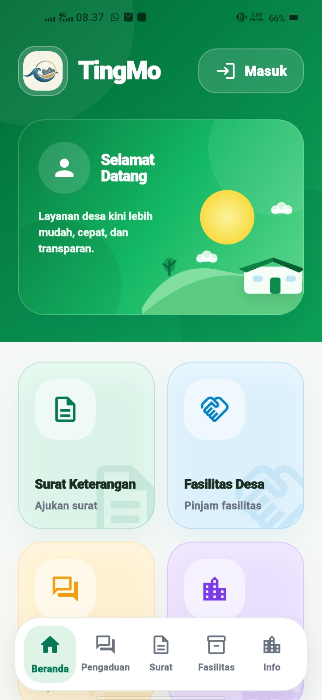
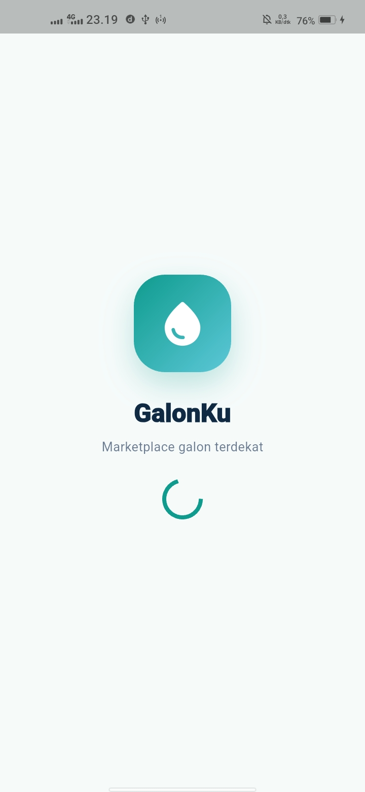
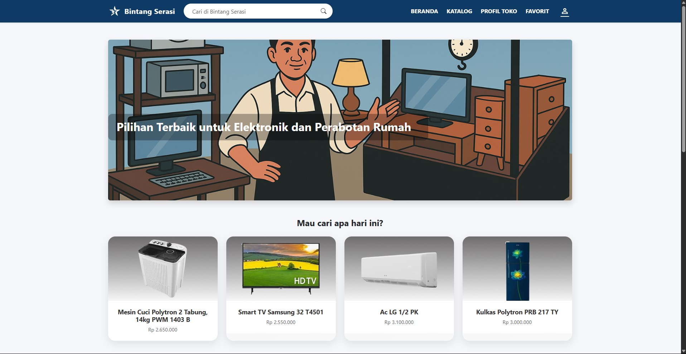
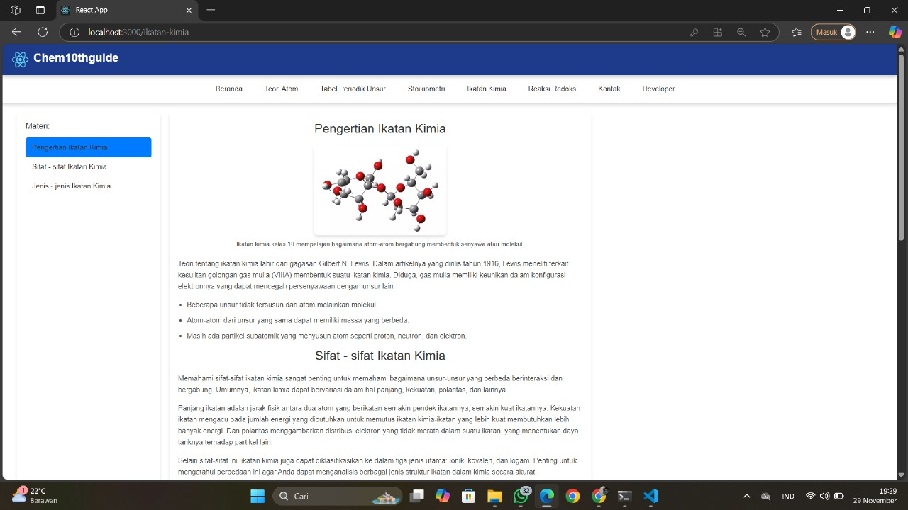
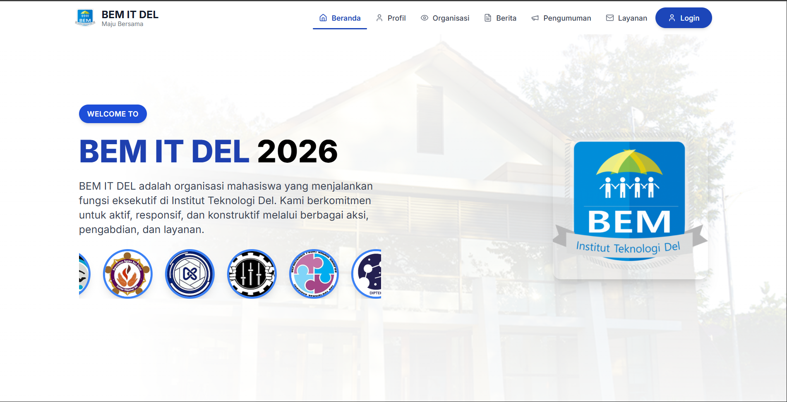
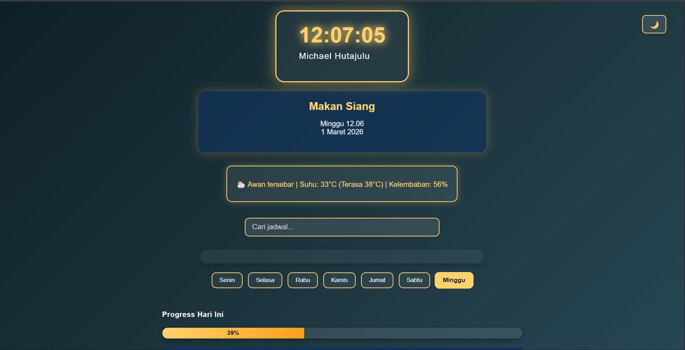
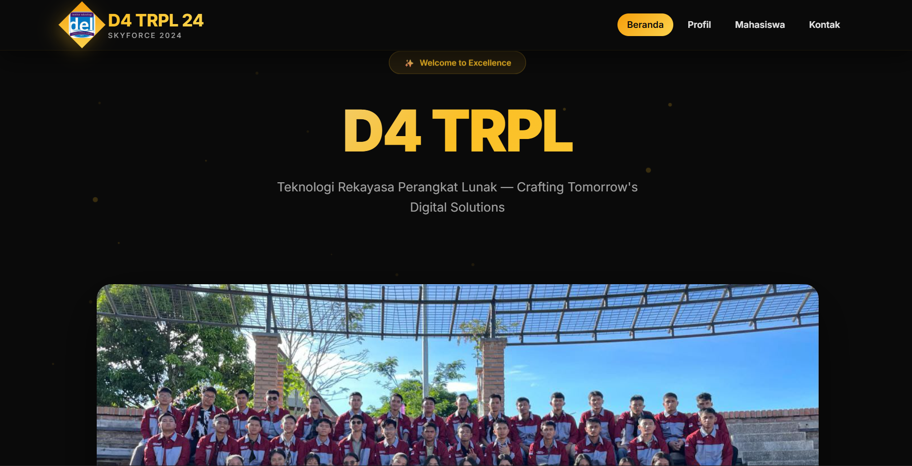
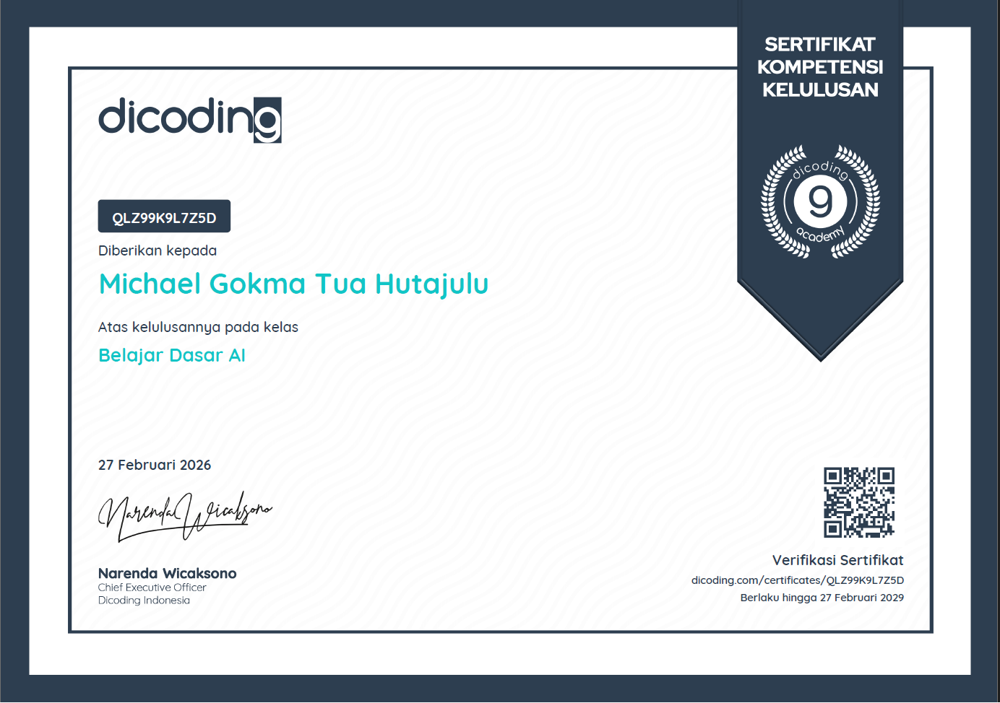
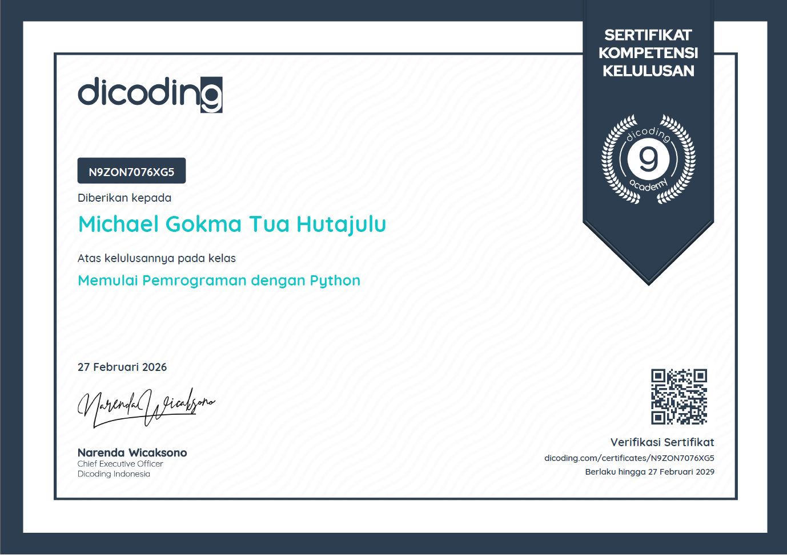

Portfolio • Mobile • Web • Backend
Michael Gokma
Tua Hutajulu
Mobile Developer|
Mahasiswa D-IV Teknologi Rekayasa Perangkat Lunak yang berfokus pada pengembangan aplikasi mobile, sistem web, backend API, dan produk digital yang menyelesaikan kebutuhan nyata. Saya terbiasa menyusun alur fitur, menghubungkan frontend dengan backend, membuat dokumentasi, dan menjelaskan solusi secara sederhana.
01 — Tentang Saya
Membangun sistem dari kebutuhan nyata, bukan hanya dari tampilan.
Saya belajar melalui project, dokumentasi, pengujian, dan kerja tim. Fokus saya adalah membuat produk digital yang alurnya jelas, rapi, dan mudah digunakan.
Saya tertarik pada pengembangan aplikasi mobile dan sistem informasi yang membantu pekerjaan sehari-hari menjadi lebih mudah. Dalam beberapa project, saya terbiasa mengerjakan alur autentikasi, pengajuan layanan, pengaduan, peminjaman fasilitas, dashboard admin, integrasi API, database, dan notifikasi.
Selain teknis, saya juga belajar mengelola komunikasi tim, menyusun dokumentasi, mempresentasikan progress, dan menjelaskan hal teknis dengan bahasa sederhana. Pengalaman mengajar informatika untuk siswa pemula membantu saya lebih sabar dan lebih jelas dalam menyampaikan ide.
Builder MindsetProduct ThinkingTeam CollaborationClear Communication
Education
Institut Teknologi Del
D-IV Teknologi Rekayasa Perangkat Lunak.
Current Focus
Mobile & Backend
Mobile app, backend API, database-backed workflow, testing, dan product flow.
Work Style
Reliable Builder
Terstruktur, terbuka terhadap feedback, dan fokus pada solusi yang realistis.
02 — Skills & Tools
Stack yang saya gunakan untuk membangun sistem.
Skill ditampilkan berdasarkan project yang pernah dikerjakan agar tetap relevan dan mudah dipertanggungjawabkan.
Mobile
Flutter Development
Flutter, Dart, mobile UI, form flow, routing, state management, dan integrasi API.
Backend
REST API
Golang/Gin, REST API, JWT authentication, service flow, dan struktur endpoint.
Web
Web System
Laravel, PHP, React, HTML, CSS, JavaScript, dashboard admin, dan web publik.
Database
Data Flow
PostgreSQL, MySQL, GORM, relational data flow, dan penyusunan kebutuhan data.
Quality
Testing & Docs
Blackbox testing, dokumentasi, presentasi, laporan project, dan evaluasi fitur.
Workflow
Tools
Git, GitHub, Postman, Figma, Firebase FCM, VS Code, dan workflow kolaborasi.
03 — Selected Projects
Project yang paling mewakili kemampuan saya.
Gunakan filter untuk melihat project berdasarkan kategori. Setiap card dibuat berdasarkan alur dan teknologi yang pernah saya kerjakan.
Featured

FlutterGolang/GinPostgreSQLLaravelFCM
TingMo — Mobile-Based Village Administration System
Sistem informasi dan layanan administrasi desa untuk Desa Tinggir Ni Pasir. Project ini mencakup aplikasi mobile warga, backend API, web admin, pengajuan surat, pengaduan, peminjaman fasilitas, pengumuman, notifikasi, dan tracking status.
- Berperan sebagai Project Manager & Developer.
- Menghubungkan alur mobile, backend, database, dan panel admin.
- Fokus pada service flow yang mudah dipahami warga dan admin.
Repository belum publik
Mobile Flow

FlutterGo FiberPostgreSQLMidtransRealtime Flow
GalonKu — Marketplace Galon Terdekat
Konsep aplikasi layanan pemesanan galon dengan alur customer, pemilik toko, kurir, pembayaran, dan tracking. Project ini dipakai untuk memperkuat pemahaman service request flow dan sistem mobile-backed.
- Menyusun role customer, owner, kurir, dan super admin.
- Mendesain alur order, produk, lokasi toko, pembayaran, dan pengantaran.
- Melatih pemodelan fitur marketplace berbasis layanan.
Repository belum publik

LaravelMySQLWeb Admin
UMKM Bintang Serasi Information System
Sistem informasi berbasis web untuk UMKM lokal, dengan fokus pada struktur informasi, alur fitur, dan kebutuhan pengguna.

ReactMySQLEducation Web
Belajar SMA Website
Website pembelajaran untuk siswa SMA dengan kontribusi pada halaman Kimia kelas 12, struktur materi, dan penyajian konten belajar yang lebih jelas.

WebTeamDigital Content
Website BEM IT Del
Kontribusi pada kebutuhan digital organisasi melalui dukungan konten, struktur web, dan pengembangan tampilan yang mudah diakses.

HTMLCSSJavaScriptAPI
Jadwal Kuliah & Weather API
Website sederhana untuk menampilkan jadwal dan data cuaca menggunakan integrasi API, sekaligus latihan struktur halaman dan JavaScript.

HTMLCSSJavaScript
Website Kelas D4 TRPL 24
Website profil kelas untuk memperkenalkan kelas dan teman-teman satu program studi dengan tampilan yang mudah diakses publik.
04 — Experience
Pengalaman yang membentuk cara saya bekerja.
Selain project teknis, saya juga aktif mengajar, berorganisasi, dan memimpin kegiatan. Ini membantu saya memahami komunikasi, tanggung jawab, dan kerja tim.
Informatics Extracurricular Teacher
Mengajar konsep dasar informatika dan membantu siswa pemula memahami alur berpikir komputasional, logika, serta cara menyelesaikan masalah secara bertahap.
BEM IT Del — Department of IPTEK / Digital Development
Berkontribusi pada aktivitas digital development dan pekerjaan berbasis tim dalam organisasi, termasuk diskusi progress, tanggung jawab, dan dukungan konten digital.
PKM Socialization Coordinator
Membantu koordinasi kegiatan sosialisasi, mengatur informasi, melakukan follow-up, dan berkomunikasi dengan berbagai pihak agar kegiatan berjalan lebih terarah.
05 — Certificate
Sertifikat dan pembelajaran yang sudah saya selesaikan.
Gambar sertifikat dibuat dengan mode aman agar tidak terpotong. Bagian ini bisa terus ditambahkan ketika sertifikat baru tersedia.

Belajar Dasar AI
Pembelajaran dasar mengenai konsep kecerdasan buatan dan penerapannya.
Credential belum disetel
Memulai Pemrograman dengan Python
Pembelajaran dasar Python untuk memahami logika pemrograman dan penulisan kode.
Credential belum disetel06 — Contact
Mari terhubung dan bangun sesuatu yang bermanfaat.
Terbuka untuk diskusi magang, kolaborasi project, pengembangan aplikasi mobile/web, atau bertukar cerita tentang software engineering dan product building.